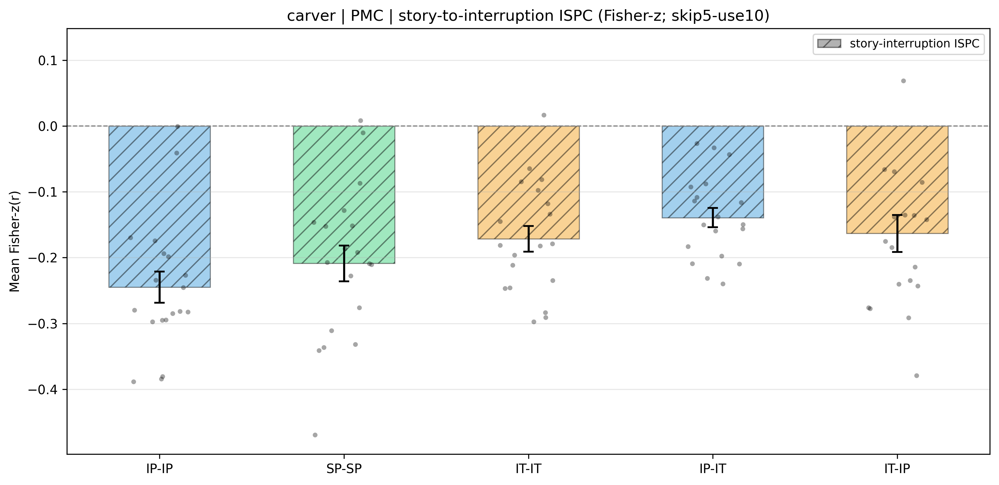

We tested whether the shared multivoxel pattern in posterior medial cortex (PMC) inverts from the story phase to the immediately following interruption phase, and whether that inversion generalises across participant groups. For every interruption epoch we built two 10-TR template patterns in PMC: a story window spanning the ten TRs ending one TR before interruption onset, and an interruption window spanning the ten TRs that began five TRs after onset (the first five post-onset TRs were discarded to avoid hemodynamic carry-over from the preceding story segment). Inter-subject pattern correlation (ISPC) at each ordered pair of epochs was a single Pearson correlation between one participant's window template and the across-participant average of the comparison group's window template at the matched epoch. For the inversion we correlated the participant's story window with the comparison group's interruption window at the matched epoch; a reliably negative value is the predicted story-to-interruption inversion. (The story-window stimulus-driven reliability that bounds this inversion is reported in Section S9.) The similarity was evaluated under five inter-subject schemes: three within-condition, in which each participant was compared with the average pattern of the other participants in the same condition (intact-pause, IP-IP; scrambled-pause, SP-SP; intact-theory-of-mind, IT-IT), and two across-condition, in which each participant in one condition was compared with the across-participant average of the other condition's group (IP-IT and IT-IP). PMC voxels were defined by the project's anatomical PMC mask, and per-voxel timecourses were z-scored across the entire run before analysis.
All averaging across subjects was performed in Fisher-z space (each per-(subject, epoch) Pearson r was arctanh-transformed before any aggregation). The table first reports the descriptive statistics of the group ISPC: the number of participants n, the Fisher-z group mean θ̂z (each participant's mean arctanh(r) across epochs, averaged across participants), its standard error across participants (SD of the participant Fisher-z means / √n), and the corresponding 95% confidence interval θ̂z ± 1.96 SE. Whether the group ISPC departs from zero was then assessed by a one-sided sign-flip permutation test carried out on delete-one-subject jackknife pseudo-values: deleting one participant at a time and recomputing θ̂z on the remaining participants yields one pseudo-value per participant, and because each leave-one-out ISPC depends on the other participants these pseudo-values, rather than the raw participant means, are the exchangeable units the permutation acts on. The null distribution was built by randomly flipping the sign of each pseudo-value over 10000 iterations and recording the mean; the one-sided permutation p is the proportion of null means at or beyond the observed mean in the expected direction of the inversion (story-interruption < 0). The legend under the table defines each column.
| Family | Cond | n | ISPC mean (r) | ISPC mean (Fisher-z, θ̂z) | SE | 95% CI | p (sign-flip) |
|---|---|---|---|---|---|---|---|
| story-interruption | IP-IP | 19 | -0.2209 | -0.2449 | 0.0235 | [-0.2910, -0.1988] | 1.00e-04 |
| story-interruption | SP-SP | 19 | -0.1894 | -0.2087 | 0.0271 | [-0.2619, -0.1556] | 1.00e-04 |
| story-interruption | IT-IT | 19 | -0.1552 | -0.1714 | 0.0198 | [-0.2101, -0.1327] | 2.00e-04 |
| story-interruption | IP-IT | 19 | -0.1249 | -0.1392 | 0.0148 | [-0.1682, -0.1101] | 1.00e-04 |
| story-interruption | IT-IP | 19 | -0.1459 | -0.1631 | 0.0281 | [-0.2182, -0.1081] | 2.00e-04 |

Bars: θ̂z (Fisher-z group mean). Whiskers: ±SE across participants (SD / √nparticipants). Dots: subject-mean Fisher-z values. IP-IP, SP-SP, IT-IT compare each participant with the average pattern of the other participants in the same condition; IP-IT and IT-IP compare each participant with the across-participant average of the other condition's group.